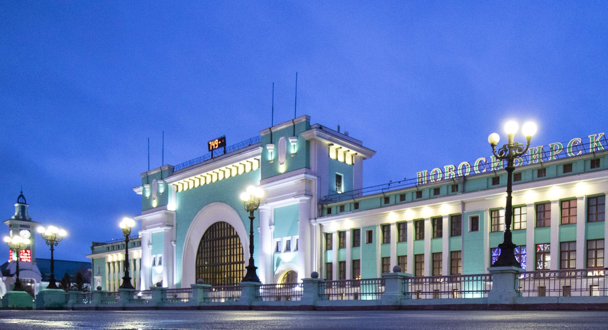
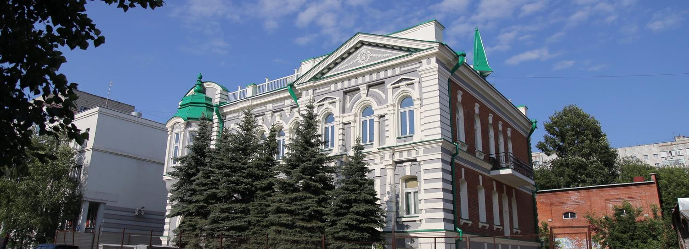
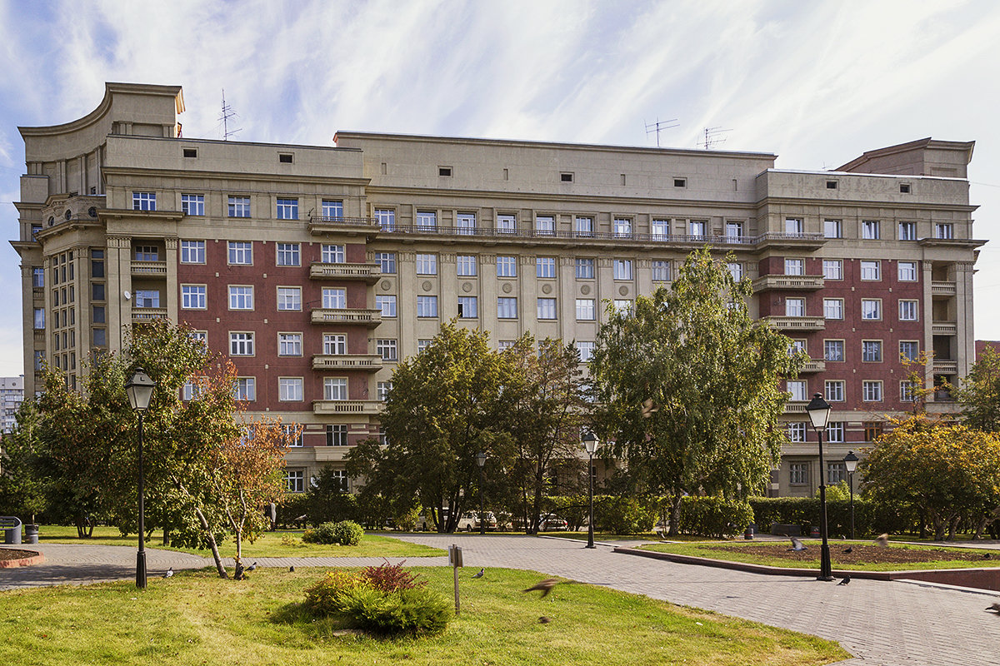
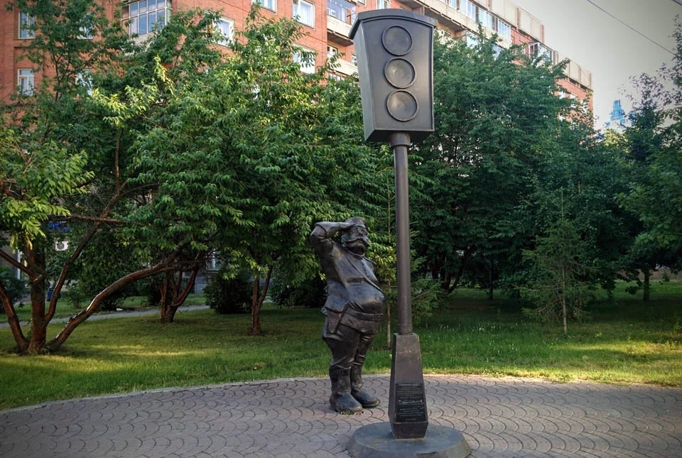

Парк "Городское начало"
Памятник императору Александру III в парке «Городское начало» на набережной Оби в Новосибирске. Скульптор — народный художник РФ Салават Щербаков (Москва). Общая высота монумента 13 метров: постамент — 8 метров (гранит); скульптура — 5 метров (бронза). Мотивация сооружения памятника: по решению императора началось строительство Транссибирской железнодорожной магистрали, предопределившей развитие города Новосибирска. Скульптурная композиция символично ориентирована на восток. Памятник стал вторым объектом парка «Городское начало» (первый — пролет исторического железнодорожного моста через Обь).
Вокзал станции Новосибирск-Главный 
В 1929 году Московским архитектурным обществом по заказу Томской железной дороги объявлен конкурс эскизных проектов-идей пассажирского вокзала в составе сооружения станции Новосибирск-Главный. На конкурс поступило 45 проектов, из которых в марте 1930 года 13 были премированы жюри. Лучшим был признан проект под девизом «Прямое движение» архитектора Н.Г. Волошинова. Типологически здание вокзала в проекте представляло собой вокзал «прибрежного» типа, состоящий из прямоугольного корпуса, расположенного вдоль путей, и большого конкорса над путями длиной 90 м с залом ожидания, рестораном и лестницами-сходами к пассажирским платформам. Разработка и корректировка проекта заняла несколько лет. Окончательный проект разработан совместными усилиями архитекторов А.И. Лоскутова, М.П. Клековкина, Б.П. Савельева, И.С. Персикова, К.И. Митина, Я.Е. Кузнецова, при общем руководстве Б.А. Гордеева и С.П. Тургенева, Б.А. Биткина с А.Д. Крячковым в качестве консультанта. Расчет арочного свода и других железобетонных конструкций выполнил инженер-архитектор Н.В. Никитин в 1937 году.
В результате переделок проекта и исправлений в ходе строительства была окончательно утрачена функционально-планировочная схема проекта Н.Г. Волошина, в том числе то, что являлось основополагающим в проекте, — кратчайшая связь с межпутными посадочными платформами.
Центральная входная часть вокзала приобрела композицию подобную триумфальной арке, обрамленной пилястрами «тосканского» ордера и увенчанной большим аттиком, скрывающим снаружи железобетонную параболу свода кассового зала. В целом архитектура здания вокзала выполнена в стиле «ар нуво» советской архитектуры 1930-х годов.
В 1939 году новое здание железнодорожного вокзала было принято в эксплуатацию.
Гостиница "Метрополитен" 
Построена в 1905 году, архитектор И. С. Лепёшкин, по другим данным — К. К. Лыгин. Первоначально здание строилось как жилой дом для П. А. Мамонтова. Позднее оно перешло в собственность Я. А. Истомина, открывшего здесь в 1917 году 14 номеров гостиницы «Метрополитен», которая стала первой каменной гостиницей города. Главным фасадом выходит на ул. Революции (бывшая Дворцовая). Здание представляет собой историко-культурную ценность как не характерный для Новосибирска пример архитектуры эклектики с преобладанием мотивов модерна и неоклассицизма.
Здание 100-квартирного жилого дома
Стоквартирный дом (Красный проспект, 16). Значительным явлением в жилой архитектуре Новосибирска, получившим всесоюзный и мировой резонанс, стал 100-квартирный дом Крайисполкома, выполненный по проекту архитектора А. Д. Крячкова с изменениями архитектора-художника В. С. Масленникова в 1932 — 1937 годах. Здесь слилось творчество двух мастеров разных школ, но в одинаково высокой инженерной и художественной культурой, большим практическим дореволюционным опытом. Здание является ярким примером постконструктивистских неоклассических поисков в архитектуре 1930-х годов. На Международной выставке искусств и техники в Париже в 1937 году дом был отмечен Дипломом I степени, золотой медалью и премией «Гран-при». Является памятником архитектуры федерального значения.
Памятник первому светофору
Памятник открыт 25 июня 2006 года — к 70-летию со дня основания Госавтоинспекции МВД России. По данным архивов на этом месте в 1940-е годы действительно стоял первый в городе светофор.